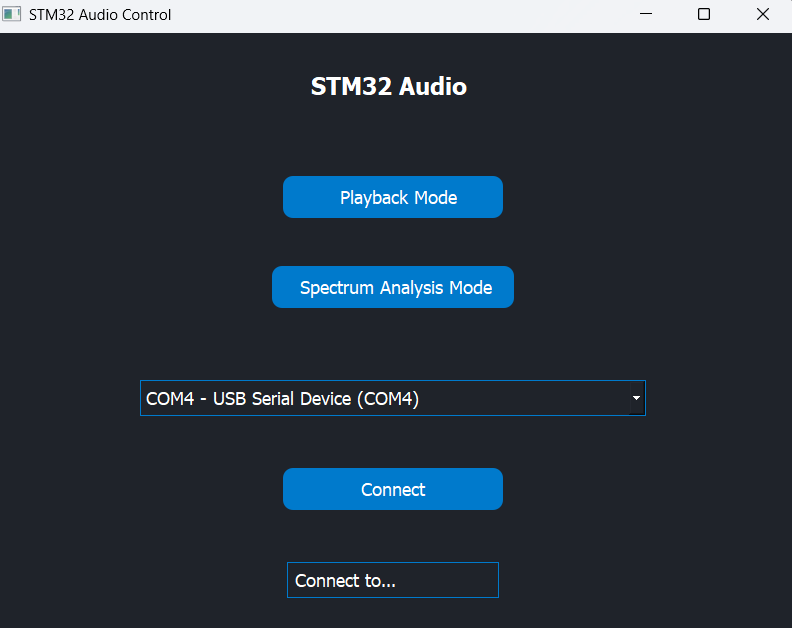

GUI
The GUI is a PyQt5 application located in tools/audio_gui. It provides mode selection, serial connection management, and real-time visualization of playback and FFT data.
Main entry point
tools/audio_gui/main.py starts the application and mode selector.
The GUI uses pyserial to open the USB CDC COM port.
Modes
Playback mode sends the PB_MODE command to the device.
Spectrum analysis mode sends the EQ_MODE command and renders FFT data.
Interface snapshot

Main screen for mode selection and serial connection.